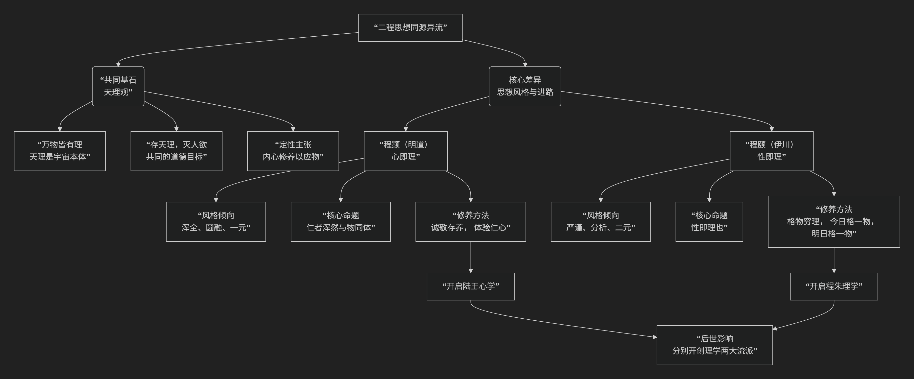

程颢和程颐
程颢（明道先生）和程颐（伊川先生）兄弟并称“二程”，同为宋代理学的奠基人。他们的思想同大于异，共同构建了以 “天理” 为核心的理学体系，但在气质、风格和某些侧重面上有显著区别，可谓 “同源异流”。
其思想“同源”与“异流”的关系，可以通过下图清晰地把握：

一、共同基石：“同源”于“天理”
二程兄弟最根本、最重要的共同贡献是确立了 “天理” 作为理学最高范畴的地位。
万物皆有理：他们共同认为，“天理”是宇宙万物的本源、本体和普遍法则，它永恒存在，不以人的意志为转移。程颢说：“吾学虽有所受，‘天理’二字却是自家体贴出来。” 这表明“天理”观是他们的核心创造。
道德本体：他们都将“天理”与儒家伦理直接等同。“人伦即天理”。仁、义、礼、智等道德规范不仅是社会规范，更是宇宙的最高法则。
“存天理，灭人欲”：这是他们共同的道德修养目标。人需要克服一己的私欲（人欲），使自己的言行符合普遍的天理。
“定性”主张：都强调内在的修养，主张通过“定性”（保持内心的安定和本性）来应对外物，达到“物来顺应”的境界。
二、核心差异：“异流”于风格与进路
尽管共享“天理”观，但兄弟二人在探寻和体认“天理”的路径上风格迥异。下表清晰地对比了他们的核心差异：
对比维度 |
程颢（明道先生） |
程颐（伊川先生） |
|---|---|---|
思想风格 |
一元、浑全、圆融 |
二元、严谨、分析 |
核心命题 |
“仁者浑然与物同体”、“心是理，理是心” |
“性即理也”、“冲漠无朕，万象森然已具” |
心、性、理关系 |
“心即理”：强调心、性、理是一回事，心与天地万物本是一体。 |
“性即理”：天理体现在人身上是“性”，心是认知和主宰，需通过心去认知性中之理。 |
修养方法 |
“诚敬存之”：通过内心体验和存养，直接体认与万物同体的“仁心”。 |
“格物穷理”：今日格一物，明日格一物，积累久了，自然能豁然贯通，悟得普遍天理。 |
气象与影响 |
倾向直觉体悟，更有诗人气质，开创了陆王心学的先声。 |
倾向渐进积累，严谨如哲学家，为朱熹的理学体系奠定了主干。 |
三、差异的具体体现
对“仁”的理解
程颢：“仁者浑然与物同体”。他认为“仁”是一种与宇宙万物合一的最高精神境界，一种广大的胸怀和生命力。识“仁”不需要外求，只需反身而诚，体验到自己与万物血脉相连的一体感。
程颐：“仁是性，爱是情”。他对概念进行精确区分，认为“仁”是人性中本具的道德理性（性），而“爱”是这种理性发动后产生的情感（情）。他强调通过理智来把握“仁”的本质。
修养功夫的路径
程颢：路径是由内而外的。功夫在于“识仁”，然后“以诚敬存之”。只要内心保持诚敬，勿忘勿助长，自然能应事得当。这更简易直接。
程颐：路径是由外而内的。功夫在于“格物穷理”，即通过研究具体事物（包括读书、应事、待人等）来穷究其中的“理”。这是一个渐进积累的过程，最终达成贯通。
总结与历史地位
程颢的思想更主观、内在、一元化，强调直觉与境界，开创了后来由陆九渊、王阳明发展的 “心学” 一脉。
程颐的思想更客观、外在、析理精密，强调知识与积累，奠定了后来由朱熹集大成的 “理学”（程朱理学）体系的主干。
尽管存在差异，但二程共同将儒家思想提升到了全新的哲学高度，构建了理学的根本框架。可以说，没有二程，就没有后来的程朱理学和陆王心学。他们的“同源”奠定了理学的基石，而他们的“异流”则开启了理学内部两条丰富而富有张力的发展道路。